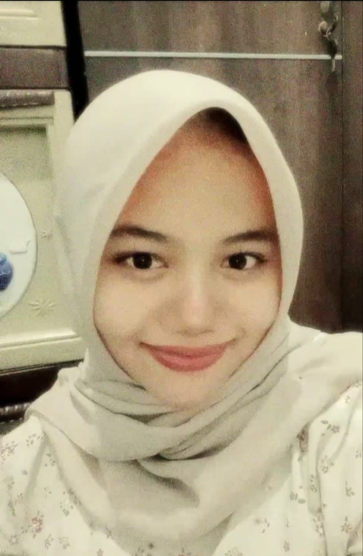

Curriculum Vitae
Legina Alfirani

Data Pribadi
- Nama: Legina Alfirani
- Alamat: Gg. Udawa Blok. Sukawarna RT 002 RW 001 Kel. Cigadung - Subang
- No HP: 087847539781
Pendidikan
- SMAN 1 Subang (2020-2023)
- SMPN 2 Subang (2017-2020)
- SDN Kalapa Kembar (2010-2016)
- Politeknik Negeri Subang (2023-Sekarang)
Pengalaman Organisasi
- Wakil Ketua Paskibra SDN Kalapa Kembar (2013-2016)
- Wakil Ketua Paduan Suara (2021-2022)
- Kepanitiaan Pemilihan Mahasiswa Berprestasi (Pilmapres) - JTIK (2024)
- Kepanitiaan Digital Festival Nasional - Divisi Konsumsi (2024)
- Kepanitiaan Masa Bimbingan (MABIM) - Divisi Pos to Pos (2024)
- Kepanitiaan Dies Natalis Himpunan - Divisi Lomba (2024)
- Anggota Himpunan Mahasiswa Teknologi Informasi dan Komputer (2023-Sekarang)
Project
- Aplikasi Pencatatan Keuangan Berbasis VBA UMKM Alam Sari (2023)
- Sistem Informasi Manajemen Rumah Khitan (2024)
Keahlian
- Microsoft Excel
- UI/UX
- Bahasa Pemrograman HTML
Prestasi
- Juara Umum Lomba Paskibra tk. Jawa barat 2016
- Juara 2 Lomba Paduan Suara tk. Wilayah IV Jawa Barat 2021
Kontak Saya